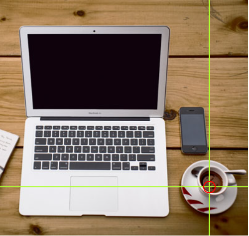

Example:-
Try to click on the computer, phone, or the cup of coffee in the image below:-

With HTML Image Maps, you can create clickable areas on an image.
The HTML <map> tag defines an image map. An image map is an image with clickable areas. The areas are defined with one or more <area> tags.
Example:-
Try to click on the computer, phone, or the cup of coffee in the image below:-
The idea behind an image map is that you should be able to perform different actions depending on where in the image you click.
To create an image map you need an image, and some HTML code that describes the clickable areas.
The image is inserted using the <img> tag. The only difference from other images is that you must add a usemap attribute:-
Example:-
<img src="url" alt="alternatetext" usemap="#name_of_image_map">
Tip:- You can use any image as an image map!
Then, add a <map> element.
The <map> element is used to create an image map, and is linked to the image by using the name attribute:-
Example:-
<map name="name_of_image_map">
Then, add the clickable areas.
A clickable area is defined using an <area> element.
You must define the shape of the clickable area, and you can choose one of these values:-
The coordinates for shape="rect" come in pairs, one for the x-axis and one for the y-axis.
So, the coordinates 34,44 is located 34 pixels from the left margin and 44 pixels from the top.
The coordinates 270, 350 is located 270 pixels from the left margin and 350 pixels from the top.
Example:-
Click on the computer in the image below to go to a new page and read more about the topic:-
To add a circle area, first locate the coordinates of the circle:-
337, 300

Then specify the radius of the circle:-
44 pixels
Now we have enough data to create a clickable circular area:-
Example:-
Click on the cup of coffee in the image below to go to a new page and read more about the topic:-
This is the area that becomes clickable and will send the user to the page "https://en.wikipedia.org/wiki/Coffee":-
The shape="poly" contains several coordinate points, which creates a shape formed with straight lines (a polygon).
This can be used to create any shape.
Like maybe a croissant shape!
How can we make the croissant in the image below become a clickable link?

We have to find the x and y coordinates for all the edges of the croissant:-

The coordinates come in pairs, one for the x-axis and one for the y-axis:-
Example:-
Click on the croissant to go the new page and read more about the topic:-
This is the area that becomes clickable and will send the user to the page "https://en.wikipedia.org/wiki/Croissant":-

A clickable area can trigger a JavaScript function.
Add a click event to the <area> element to execute a JavaScript function:-
Example:-
Here, we use the onclick attribute to execute a JavaScript function when the area is clicked:-
Click on the cup of coffee to execute a JavaScript function:-
| Tag | Description |
| <img> | Defines an image |
| <map> | Defines an image map |
| <area> | Defines a clickable areas on an image map |
| <picture> | Defines a container for multiple image resources |